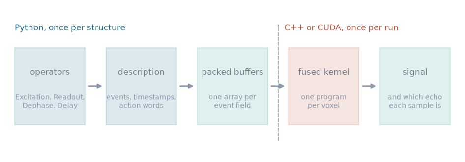
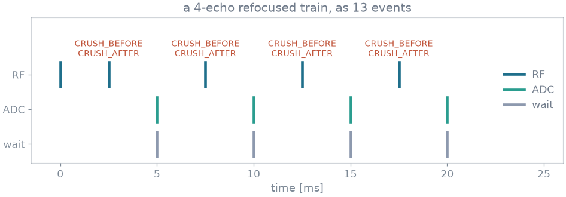
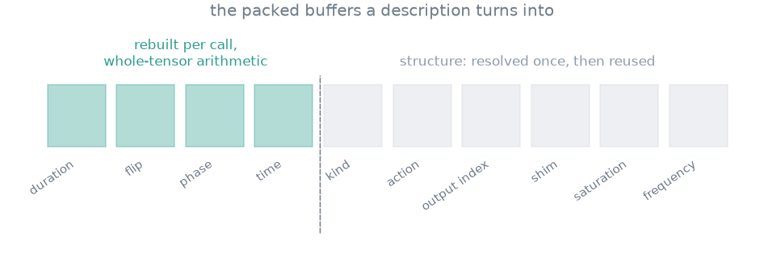
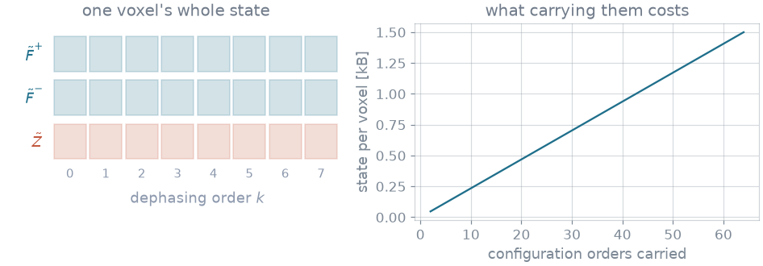
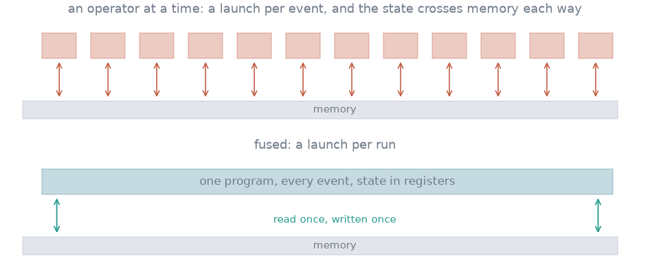
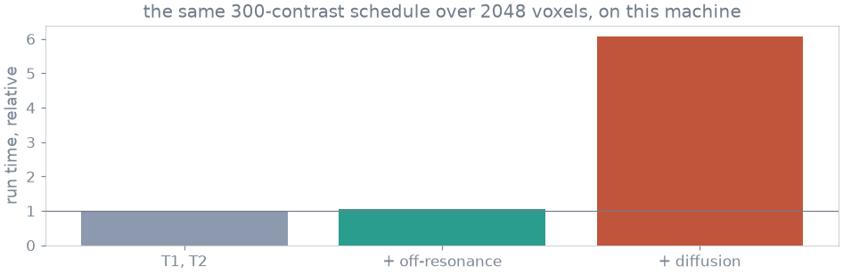
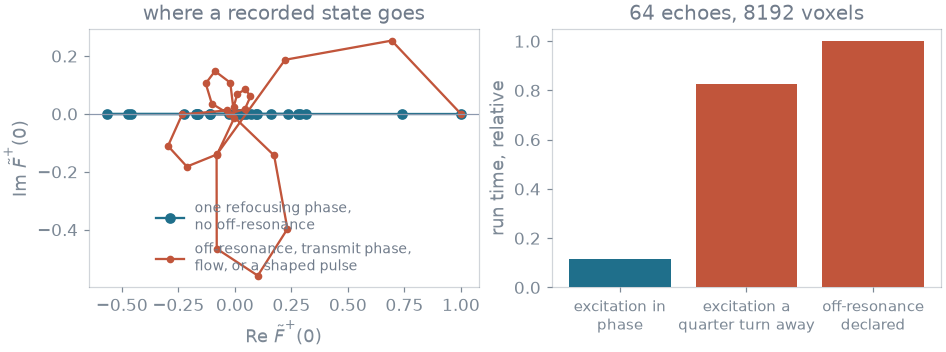
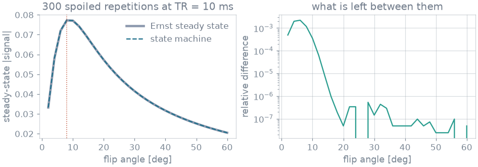

Kernels#
How a SequenceDescription becomes packed buffers, and how
the fused CPU and CUDA kernels run them. The physics is on
Extended phase graphs; derivatives and device placement are on
Derivatives and Execution.
Event packing#
A description is a list of events, each with a timestamp, a payload and an action word. Whatever assembled it – composed operators, a shipped builder, a Pulseq file or an MRD stream – the path afterwards is the same.


Left of the dashed line is Python and runs once per structure; right of it is compiled and runs once per call. The kernels do not interpret a sequence and do not dispatch per event: they receive the tissue arrays and nine flat event arrays.#
The event arrays are duration, kind, flip, phase, action,
output_index, shim_index, saturation and rf_frequency_hz
(EVENT_PARAMETERS in src/blochsim/sequence/_parameters.py, the parameter
ABI shared by the dispatch, the C++ extension and the CUDA kernels).
Events and action words#
An event is a wait, an RF pulse or an ADC. Gradients are not events. A Pulseq
file has no gradient use field, so a crusher cannot be told from a phase encode
without tracking the k-space moment through the TR; instead each event carries
its role as bits of blochsim.sequence.EventAction: CRUSH_BEFORE and
CRUSH_AFTER for the unbalanced gradients a refocusing pulse sits between,
SHIFT_AFTER for one played after a readout, SPOIL_AFTER for ideal
transverse spoiling there instead. The same bit values are the packed action
word.


A four-echo refocused train, as describe()
emits it. The crushers are carried by the refocusing pulses between them,
which is why Refocusing is one operator rather than three. The ADCs are
marked as echo centres, which is how a reconstruction selects samples without
counting events.#
The operators (Excitation, Refocusing, Readout, Dephase, Spoil,
Delay and the readout modules built from them) emit exactly this
vocabulary, so a module written outside the package – a T2 preparation, an
MT saturation, a shaped pulse – reaches the kernels unchanged.
Value rebinding#


What a call with different numbers rebuilds when the structure is resolved.#
A layout turns its arguments into event parameters by scaling and offsetting
them: degrees to radians, a flip angle divided and multiplied by the pulse’s
envelope integral, a phase plus the integral’s argument, a timestamp
accumulating a spacing. Each entry of duration, flip and phase is
therefore offset + scale * value in one element of one argument. Two
forward-mode passes recover the map – a tangent of ones gives the scale, a
tangent of 1, 2, 3, ... gives the scale times the source index – and later
calls rebuild these buffers with whole-tensor arithmetic. Sample times are not
mapped: a timestamp is the running total of every interval before it, so they
are read off the rebuilt intervals.
The map is refused when a recovered index is not a whole number (an entry
draws on more than one element) or when a rebuild disagrees with a fresh
packing at a point the map was not read at (src/blochsim/model/_binding.py).
A refusal is remembered rather than retried each call. With
repetitions="auto" no structure is held across calls.
Per-voxel state#


One voxel’s state, and its memory as more orders are carried. In complex64, a voxel at 20 orders is 480 bytes, so a million-voxel volume holds a few hundred megabytes of state: a run is bounded by how many voxels a card holds rather than by the sequence.#
The state of a voxel is the three families \(F^+_k\), \(F^-_k\) and \(Z_k\) over
the orders it carries. states= on a simulator, or nstates= on a call, sets
the order count. Left unset, it is one more than the winding the description
declares – every CRUSH_BEFORE, CRUSH_AFTER and SHIFT_AFTER over every
repetition – clamped to between 8 and 64.
Fused kernel#


Written as tensor operations, an EPG simulation is one launch per event, each reading the state from memory and writing it back. The fused program walks the whole event stream with the state in registers, touching memory at the start, at the end and at each recorded sample. The loop is over events; the parallelism is over voxels.#
The CPU kernels are a threaded C++ extension (_epg_cpu.cpp, _perk_cpu.cpp)
over a worker pool that outlives the calls (_threads.hpp). The CUDA kernels
are compiled ahead of time (_gpu.cu, _epg_kernels.hpp, _pools_kernels.hpp),
with a block of threads per program. Every mode exists on both sides –
forward, forward mode, adjoint, forward-over-reverse, the real-subspace
specialization and the pool models – and the two agree to float32 round-off.
On Linux the same CUDA kernels are also compiled for the host (_gpu_host),
which is how the suite checks them without a card.
Layouts and compiles#
The EPG kernels on a card are written for their layouts (_layout.hpp). A
layout is what is compiled: the pool count, how a pulse is formed, whether the
tissue has per-voxel maps, how many problems a thread holds, and whether
there is one train. Every other switch is read at run time and steers whole
blocks once per event, so one compile serves every combination of them. The
loops are written once over a number type (_layout_numbers.hpp): at float
they are the forward simulation, at num::Dual the Jacobian-vector product.
The adjoints keep the state every few events on the forward sweep and replay
each stretch from it on the reverse sweep. A launch whose rows fit a warp runs
a layout kernel ahead of any tile kernel.
Limits#
1024 threads per block. A tile holds one state order per thread, so an EPG launch with more than 1024 orders, or a pooled one whose orders times pools pass 1024, is refused with the kernel’s name. A thread holds
Y_LANESproblems in registers (_lanes.hpp), so one read of each event serves all of them.32-bit indexing. The EPG kernels index with
bsk::index_t, a 32-bit integer (_tile.hpp). An offset that can pass \(2^{31}\) is cast to 64 bits where it is formed, and the launcher refuses an integer argument that does not fit rather than truncating it.
Declared terms#
A tissue property has an identity value, at which it has no effect, and a run reads which properties were given as maps to decide which terms the kernel evaluates. Off-resonance, diffusion, flow, a transmit array and a second pool are each absent unless a model declares them and a call gives them.


The same fingerprinting schedule over the same voxels, with more physics declared each time, measured on the machine that built this page. A second pool is not a term on top of these: it selects a different kernel, with a coupled relaxation-exchange operator [1] in place of the two scalar factors.#
Real-subspace path#
If every refocusing pulse shares one phase, the excitation is in phase with them or a half turn away, and there is no off-resonance, transmit phase or flow, the states stay on one axis of the complex plane for the whole train: the CPMG and anti-CPMG arrangements of the EPG literature [2]. The arithmetic can then be done in real numbers: the shift’s conjugate coupling becomes a sign, and the rotation reduces to a real 3x3 matrix.
A pulse a half turn round is the same pulse turning the other way, and a sample demodulated a half turn round is the same sample negated. The event stream is packed with those half turns removed – the flips they negate carry the sign, and the samples they negate pass theirs to the signal – so an anti-CPMG train, or one alternating its phase by a half turn every repetition as a phase-cycled balanced sequence does, takes this path. Both identities hold at every phase, so the rewrite is differentiated exactly.


Left, the recorded state in the two cases. Right, the same 64-echo train over the same voxels with the excitation in phase with the refocusing pulses, a quarter turn from them, and in phase with off-resonance declared. Only the first is confined to the axis.#
The test is made per run (real_subspace_axis in
src/blochsim/sequence/_accelerators.py), and skipped for a problem too small
to repay it (detection in _calibration.py). It refuses three arrangements
that look real and are not: off-resonance, which is refocused at the echo
centres but not between them; an excitation a quarter turn from the refocusing
pulses, whose samples are real while the states fill the plane; and a shaped
pulse, whose rotation axis has a component along \(z\). A train alternating
between quarter-turn phases leaves the axis and runs the complex kernel. On the
host, the real-subspace kernels run blocks of eight trains in SIMD lanes
(REAL_LANES); BLOCHSIM_REAL_SCALAR=1 routes them through the
one-train-at-a-time kernels instead.
Pulses#
Pulses are instantaneous rotations by default. A slice-selective pulse can be
integrated ahead of time into a table over slice position and effective flip
angle [3], read back by cubic Hermite interpolation. The flip angle and the
transmit scaling enter only through their product and the RF phase factors
out, which keeps that table small. It is requested with across_slice=.
Verification against closed forms#
Where a sequence has an analytic steady state, the state machine reproduces
it. Where it does not, each operator still has a closed form, and the tests
under tests/epg/ pin the shift, the RF rotation, relaxation, diffusion, flow,
spoiling and the two- and three-pool longitudinal steps against expressions
written out in the test.


A spoiled gradient echo played out event by event, against the Ernst expression shipped as a closed-form simulator. They agree to float32 round-off over the flip angles that matter. The residual at the smallest angles is the approach to steady state: recovery is slow enough there that 300 repetitions have not reached the state the closed form gives.#
A change to the physics brings a check of the same kind; see Tests.
Scope of the kernels#
Gradient waveforms. A description declares one crusher moment for the whole sequence and dephasing is quantized to whole orders, so a bipolar pair, a b-value of its own, or a crusher of twice its neighbour’s area has no representation.
Intravoxel field variation. Off-resonance is a per-voxel constant, so \(T_2'\) dephasing comes from a distribution across voxels rather than from within one.
Three pools beyond a voxel’s magnetization. Three pools with two different second pools are carried, but a tissue cannot declare more than a voxel’s worth of magnetization between them.
These are boundaries of the model rather than of the implementation.